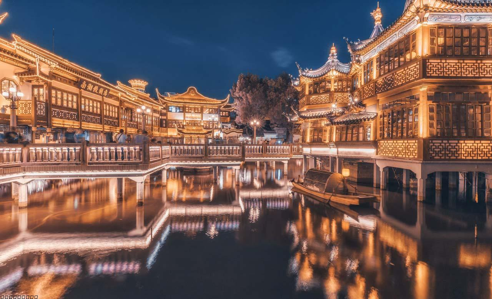

Travel
Yellowstone National Park
Yellowstone National Park is a national park located in the western United States, largely in the northwest corner of Wyoming and extending into Montana and Idaho. Yellowstone was the first national park in the U.S. and is known for its wildlife and its many geothermal features.
Photo Gallery

Mammoth Hot Springs has a number of actively forming Travertine terraces.

The drive to Lamar Valley requires some dangerous roads. But the result is amazing sunset views.

If you can handle the odor, the Yellowstone Sulphur Springs is a great place to hike.
Shanghai

Shanghai, often referred to as the "Pearl of the Orient", is a dynamic and vibrant metropolis in China. As one of the world's largest cities, Shanghai is a dazzling blend of tradition and modernity. With its iconic skyline featuring towering skyscrapers like the Shanghai Tower and the Oriental Pearl Tower, it's no wonder that Shanghai is often considered the financial and economic hub of Asia. Beyond its impressive architecture, the city boasts a rich cultural heritage, reflected in its historic neighborhoods such as the Bund and the French Concession. Here, you can stroll along tree-lined streets, explore colonial-era buildings, and savor a mix of international cuisines. Shanghai is also a global center for fashion, art, and entertainment, with a thriving arts scene, world-class museums, and a bustling nightlife. Visitors to Shanghai are sure to be captivated by its energy, diversity, and the seamless fusion of old and new.
Photo Gallery

There are 52 classical revival buildings with different styles standing on the Bund, known as the Bund World Architecture Exhibition Group. It is an important historical site and representative building in modern China, and one of the landmarks of Shanghai. In November 1996, the State Council of the People's Republic of China listed it as the fourth batch of national key cultural heritage protection units.

Yu Garden is a classical garden built in the Ming Dynasty. It is located in the northeast of the old city of Shanghai, bordering Fuyou Road in the north, Anren Street in the east, and Chenghuang Temple and Yu Garden Mall in the southwest.